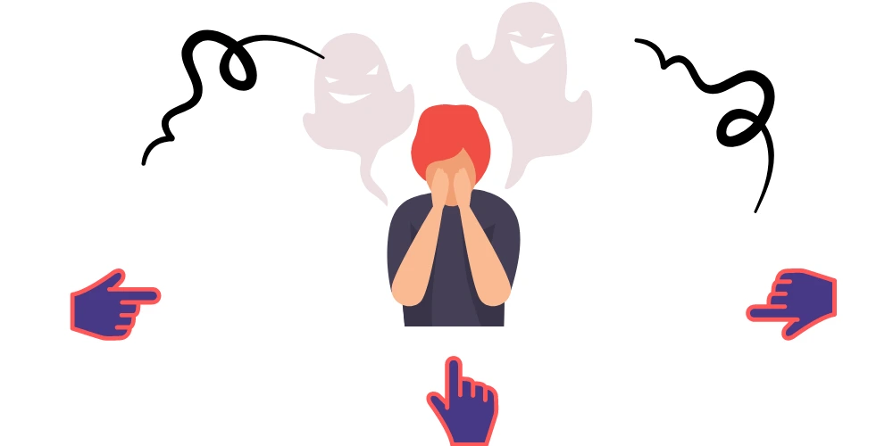
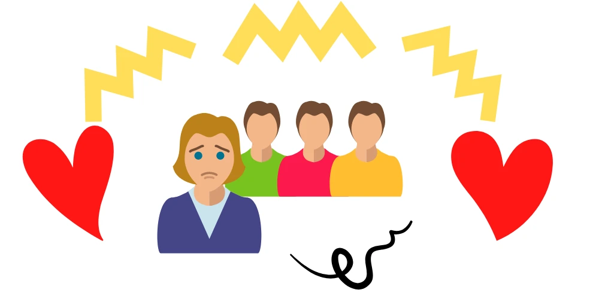

Social Phobia is a mental health condition. It’s normal to feel nervous in some social situations. For example, going on a date or giving a presentation may cause that feeling of butterflies in your stomach. But in Social Phobia, everyday interaction causes significant anxiety, fear, self-consciousness and embarrassment because you fear being scrutinized or judged by others. There is some overlap with low self-esteem. You might know someone who gets anxious in social situations. Read our guide below on how to help someone with Social Phobia.

Learn about Social Phobia
Social Phobia is more than just serious shyness. Nowadays, it’s the most common anxiety disorder psychologists see. Because this fear can impact work, school and other day-to-day activities. Learning as much as you can about the symptoms of the disorder and what treatments are effective will help you know what to expect from this illness and from the recovery.
When to be patient and when to push
Remind yourself why it is an intricate balance between not allowing avoidance and being sensitive to the need for slow advance. Your loved ones may have spent years with the symptoms of Social Phobia before being diagnosed. During this time you may have helped them avoid anxiety-arousing situations. If you have developed the style of speaking on behalf of them while in social situations, we suggest the following :
- Firstly, stop this behaviour gradually.
- Secondly, negotiate with them.
- In addition, let them express their own feelings.
Meanwhile, try to unlearn the pattern of speaking on behalf of them. However, it will take time and practice to unlearn these styles and habits. Read on to learn more strategies on how to help someone with Social Phobia.
When does it happen?
Someone with Social Phobia can experience it in various ways. But here are some common situations that people happen to have trouble with:
- Talking to strangers
- Dating
- Making eye contact
- Entering rooms
- Using public restrooms
- Going to parties
- Eating in front of other people
- Starting conversations
- Going to school or work
All socially anxious people have different reasons to be scared of certain situations. But in general, it’s an immense fear of:
- Being judged by other people in social situations
- Being embarrassed or humiliated by others– and showing it by blushing, sweating or shaking
- Accidentally offending another person
- Being the centre of attention
- Expecting negative outcomes from social interactions
- Spending time examining social situations after the fact
- Fear that other people might see your anxiety
What does it feel like?
The experience may be not the same for everyone, but if someone has Social Phobia and they’re in a really stressful situation, they might show physical symptoms like:
- Muscle tension
- Rapid Heartbeat
- Dizziness and lightheadedness
- Diarrhea and Stomach trouble
- Helplessness to catch a breath
- “Out-of-body” commotion
They may start having symptoms and getting the anxiety immediately before an event, or they might spend weeks and days worrying about it. Afterwards, they could spend a lot of time and psychic energy worrying about how they reacted. What people really thought of them. However, knowing the symptoms might be very useful to you if you want to help someone with Social Phobia.
How to help someone with Social Phobia?
If a close friend, a family member or your loved one has been diagnosed with Social Phobia, there are many challenges they will face. Having a supportive family and a criss-cross of friends will make treatment and recovery easier. Read on to learn tips on how to help someone with Social Phobia. It could be your friend, your family member or your spouse.
Getting better is a process – it takes hard work on the part of the person who are diagnosed and patience from family and friends.
How to help a friend with Social Phobia?
When you have a friend who’s getting Social anxious it can be challenging to have a social life of your own. You may want to spend time with your friend and be together in public, but they may be really unsure to be around other people. It is normal to lose tolerance with your friend when you cannot follow through with plans and activities you made because your friend’s social phobia is holding them back from attending.
These tips can help you be a supportive and caring friend so that you can guide your friend toward recovery:
Work with their emotions:
The core to remember is that anxiety is not a logical disorder. Therefore, a logical response will most likely not help, especially during a moment of suffering. Instead, try to work with their emotions. Welcome that they feel anxious and, rather than being straight, be patient and kind. Remind them that while they may feel distressed, the feeling will pass and they’ll get over it.
Work with unreasonable thoughts and acknowledge that the person is worried. For example, try something like: “I can understand why you feel that way, but I can reassure you that it’s just your anxiety. It’s not real.”
Focus on their feelings:
There’s no need to ask your friend why they are feeling worried or anxious. Instead, ask them how they are feeling. Encourage them to make a list of their symptoms. Do not attack them with questions. Allow them to feel the way they do without intervention or guilt. If they’re crying, let them cry. If they are overreacting or worried, let them worry. Giving them some room to feel will allow them to release the stress they are feeling. As they describe their fear to you, stay calm no matter how impractical their fears or anxiety activates seem. Keep in mind that, to your friend, these worries are very realistic and have a big impact on their life. They are not to be ignored as impractical or beside the point. Meet these acknowledgements of worries with curiosity and support, not criticizing.
Be patience:
Patience is a big morality when it comes to social phobia. The treatment and recovery procedure for social phobia can be a very long one. It can take months to change behaviour habits that your friend has become used to with the time. Try not to lose your cool or yell at the person. Be patient, be helpful and very supportive.
Use distraction techniques:
Distractions can help your friend lessen their anxiety for the moment. Perhaps propose taking a walk, reading a book, or playing a game. This will distract the anxious brain and empower the person to calm down clearly and naturally.
Help reframe their thoughts:
Your friend’s anxiety can make it really difficult for them to gain a frame of mind in social situations. You can help them think of a different vision by asking questions like:
- What is the worst that could happen to them?
- What is going to happen?
- What’s something good that could come out of this situation?
- Have you ever felt like this before? You survived it last time.
- If you look back at this situation, what will you think about it?
When your friend is fighting Social Phobia, the best thing you can do is inspire them to seek treatment because there might be problems that you can’t heal. Most importantly, as a friend, all you need is patience, love and understanding.

How to help a loved one with social phobia?
Living and dealing with someone who is shy or who has social anxiety needs an effort on your past. People with social phobia experience anxiety in both one-to-one and group situations and need time to get very comfortable in uncomfortable social conditions. Gradually, learn to separate the symptoms from the person, and you will be much further ahead in your journey toward helping your loved one.
Manage your own emotions:
If your loved one becomes really anxious or timid in social situations, it is important not to get too emotional yourself. Although it is important to be compassionate, try not to focus too much on fear. if they panic before going to a social gathering, avoid overly sympathizing with him about how difficult it will be. Give attention to the positive progress that he is making and your confidence in his ability to have that progress.
Show Empathy:
When a person with social anxiety shares thoughts or feelings, listen to them carefully and then mirror back what you hear with sympathetic statements. For example, if someone says “I am so nervous about my next exam, I don’t know how I will manage,” you can reply by saying “It sounds like you have a lot of negative things in your mind.” stating something that shows you are listening and care is all that is needed.
Be patient:
Treatment and getting cured can be a really slow process—it may take days, months or even years to change patterns that have been learned over many years. Be patient and don’t expect everything from them all at once. Moreover, be careful that you are tolerant when talking to a person with social phobia. Realize also that a person with social anxiety may be a step behind in life steps—such as feeling really anxious about a first date while all the rest of your friends are married or divorced. Try to be patient and understanding even if it seems like your life course is progressing at a different charge.
Be a good listener:
Sometimes just telling someone about your problems makes them seem more doable and practical. Let your friend or family member explain how they feel. In addition to making you more familiar with what they are going through, it will help them feel less lonely. Don’t tell them that they are being ridiculous or that their fears are really unrealistic. A person with social anxiety disorder knows that their fears are illogical but, nevertheless, is unable to control them.
The worst thing you could do to someone with social anxiety is to “NOT LISTEN TO THEM”—to kind of listen while you tap away on your cell phone or keep your eye on the clock. Instead, be awake and focus on what the other person is saying.
Ask them what they need:
Don’t always think that you know what your friend or family member needs. If you are in an anxiety-producing situation, ask how you can help them to cope with it. Together, you can decide how little or how much you will need to be tangled in the recovery process.
How to help your spouse with social phobia?
Living with and loving a spouse with social anxiety can be disappointing and it may also be very lonely. You probably feel stuck between hanging out with friends and staying in with your spouse. If your spouse has difficulties with social anxiety, there are several things you can do to be a very supportive partner and to help them overcome this situation.
These steps will also help your partner get involved in more social situations and enjoy life and the relationship with you:
Encourage appropriate treatment:
One of the most important things you can do to help your partner overcome social anxiety is to get them into recovery. Rational treatment for social phobia can help them learn coping systems for better handling social situations; it will help them reevaluate social events in a positive way. Treatment will also lead them to examine their negative feelings and behaviours and make positive changes. For social phobia, treatment is mainly focused on individual behavioural therapy. Your spouse may get medications, including antianxiety. Support groups and group therapy are also useful in treating this condition and provide a way to practice socializing in a safe situation.
Talk about each other’s feelings:
With mental illness, being able to open up about social anxiety and how it feels is very important. Let your spouse talk about their feelings openly and honestly and be patient and don’t judge. Don’t try to be logical or to fix their issues. Your spouse knows that their feelings are not logical or sensible. They don’t need you to reason with them or come up with a stupid solution. You just need to listen to them and take their feelings very seriously.
Most importantly, create a time and space in a pleasing situation, to talk with your partner about how you are feeling. Let them know that you feel overburden and weigh down. Don’t say it in a condemnatory way, but speak calmly about how you feel. Don’t make your partner the bad guy among you two.
Let your partner know that you’ve noticed the signs:
Let your partner know that you have noticed the signs of their social anxiety and they do not need to hide anything from you. This will help them to be honest and give them an opportunity to talk to you about their problems. Find a way to be compassionate and supportive to your partner. Understand that they’re going through a very difficult problem even if you don’t have the same problem.
Make social situations more comfortable:
When you force your spouse to participate in a social event, take steps to make it more comfortable for them. This may mean having the event at your home, doing something with just one or two friends, or practising possible social interplay ahead of time. Another helpful way for making events easier to handle for someone with social phobia is to plan diversion. An unlimited party causes a lot of fear, but one at which everyone will be watching a movie or playing board games is a lot easier to take.
Push your spouse to be more social:
When supporting your loved one to step out of their comfort zone and be social, do so in a positive way. Don’t force or bully. Instead, you want to encourage and support: be excited about going out; talk about the ways of the event your spouse will enjoy and should look forward to; discuss the tips your partner has learned in therapy for getting more comfortable at social events and how these will help make it easier.
Your partner may feel angry at you for pushing them to go out for social gatherings and for putting them in really uncomfortable position but remember that they suffer from social phobia and understand where their anger is coming from. Stay calm and don’t respond to them with anger as well
Feeling anxious in social situations is very common for many of us, but for some people, it can be exhausting. Your friend or loved one may be suffering from social phobia. Most of the times people hide their symptoms, so if you notice that someone is anxious, it might be a good time to help. Observation behavioural therapy is an effective treatment for social phobia, and knowing some basic theories can be useful to you when helping someone with social phobia.
We hope this article has been helpful, provided you with some useful tips on how to help someone with social phobia. Contact our team if you would like to discuss social anxiety treatments. Our friendly team of Psychiatrists and Psychologists are here to help.